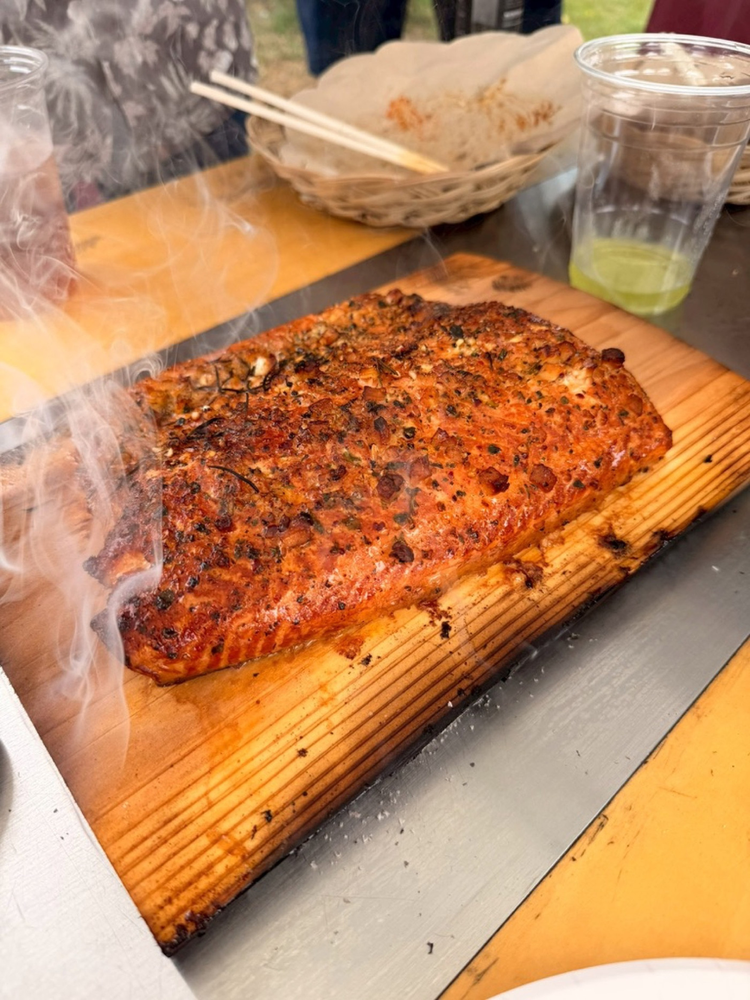

YORON BBQ
JAPANESE NEW BARBECUE
本場アメリカンBBQを、与論島から。
それは、あなたの知っている
『バーベキュー』とは別の食べ物です。
与論島では「飲みに行こう」が、そのまま「バーベキューしよう」になる。
その当たり前を、日本中の合言葉に変えていくコミュニティです。

スマホで、火の話を。
レシピ・温度の科学・次回の開催まで
yoron-bbq.com
まずは一回、食べてみて。
ANCHAN — FOUNDER